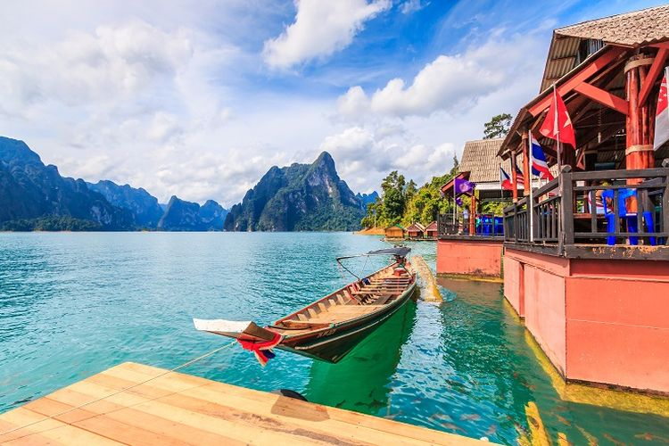
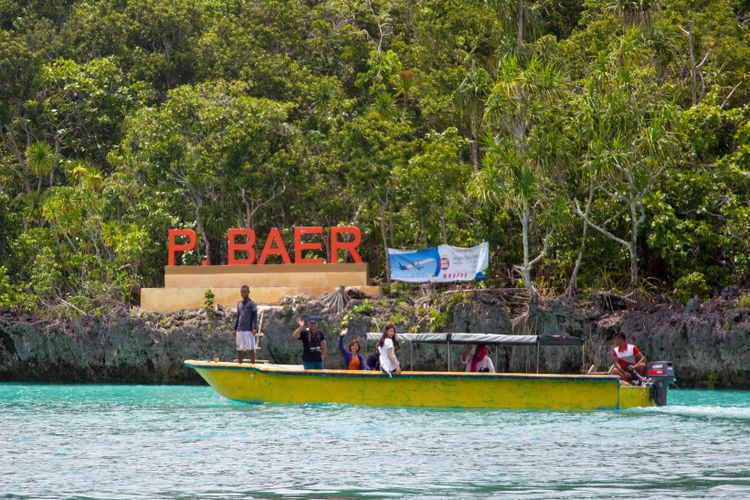
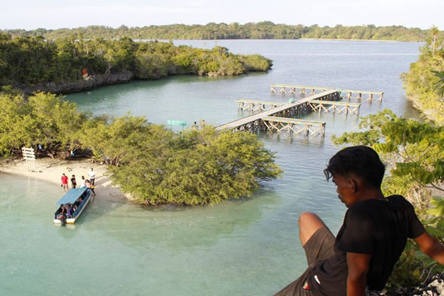

Kepulauan Kei di Maluku Tenggara memiliki sejuta pesona alam yang sayang untuk dilewatkan, salah satunya adalah Pulau Bair yang juga disebut dengan Pulau Baer.
Salah satu destinasi wisata unggulan di Nuhu Evav ini merupakan pulau tak berpenghuni. Kata bair yang memiliki arti tidak terlihat pun disematkan sebagai nama pulau tersebut.
Pulau Bair digadang-gadang mirip Piaynemo di Raja Ampat. Pasalnya, pemandangan yang ditawarkan sama-sama menakjubkan. Meski tak memiliki banyak perbukitan, pulau yang dikelilingi bukit karang dan air laut berwarna hijau kebiruan itu tetap menawan.
Berikut ini adalah aktivitas yang bisa dilakukan di Pulau Bair, Maluku Tenggara:
Surga Tersembunyi ini masih alami. Air lautnya yang jenih dapat membuat wisatawan melihat kehidupan bahwa air dengan mudah.
Godaan yang berenang, snorkeling, atau Diving mungkin akan sulit dilawan. Kapan lagi kesempatan untuk menjelajahi perairan Pulau Bair akan datang ?
Sejumlah terumbu karang menghiasi spot menyelam. Untuk menjaga keindahannya, kayuhan fin jangan terlalu kencang agar tidak merusak terumbu karang.
Wisatawan saat berkunjung ke Pulau Baer, Kepulauan Kei,Jumat(16/3/2018). Pulau Baer berada di utara pulau Kei kecil dan dapat dicapai menggunakan perahu cepat.
Ini menguji adrenalin? Di sana terdapat sebuah tebing setinggi 20 meter yang bisa dimanfaatkan untuk meloncat ke dalam air.
Maret - Agustus merupakan bulan-bulan yang tepat untuk mengunjungi Pulau Bair karena gelombang ombaknya cukup kecil dan riak air lebih tenang dari biasa.
Bagi yang kurang mahir dalam berenang atau menyelam, mereka bisa menjelajahi teluk sambil menikmati megahnya sejumlah tebing di sana. Namun, wisatawan harus hati-hati lantaran tebingnya terjal.
Kendati keindahan Pulau Bair dapat disaksikan dari bawah, wisatawan bisa naik ke puncak bukit karang untuk menikmati pemandangan dari ketinggian.
Semilir angin yang menemani akan membuat pengalaman memanjakan mata dengan panorama Pulau Bair menjadi lebih menarik. Namun, pengunjung harus berhati-hati saat naik ke bukit karang tersebut.
Destinasi wisata tersebut memiliki banyak spot menarik yang patut dilihat. Wisatawan bisa mengelilinginya dengan perahu.
Pulau Baer disebut-sebut sebagai Raja Ampat-nya Kota Tual di Maluku. Foto diambil Sabtu (4/8/2018).
Sembari menyusuri perairan yang masih bersih, kamu bisa berkunjung ke salah satu spot bernama lorong mati. Spot tersebut terdiri dari dua tebing tinggi yang cukup dekat. Bagian tengahnya menyerupai sebuah lorong sempit yang bisa kamu sambangi. Usai berfoto-foto di sana, jangan lupa untuk melihat deretan pohon bakau yang mengelilingi pulau tersebut.
Saat berlibur ke Pulau Bair, wisatawan dianjurkan untuk membawa perbekalan sendiri lantaran di sana tidak ada penjual makanan.
Namun, ada baiknya makanan dan minuman tidak dibungkus plastik. Ini karena Maluku Tenggara tengah berupaya mengurangi sampah plastik, terutama di destinasi wisata.
Jika terpaksa membawa plastik, pastikan kamu bawa pulang kembali atau buang di tempat sampah yang telah disediakan agar lingkungan pantai tetap terjaga kebersihan dan keasriannya.
Saat menyantap makanan, ada baiknya sisa-sisa makanan atau minyak yang dihasilkan dari makanan tetap disimpan dalam wadah agar keasrian Pulau Bair tidak rusak dan tercemar.
Pada masa pandemi seperti saat ini, pastikan saat berkunjung tetap melakukan protokol kesehatan pencegahan Covid-19, yaitu memakai masker, mencuci tangan dengan sabun, menjaga jarak, dan tidak bepergian jika demam atau suhu tubuh di atas 37,3 derajat Celsius.
Last updated 3 mins ago